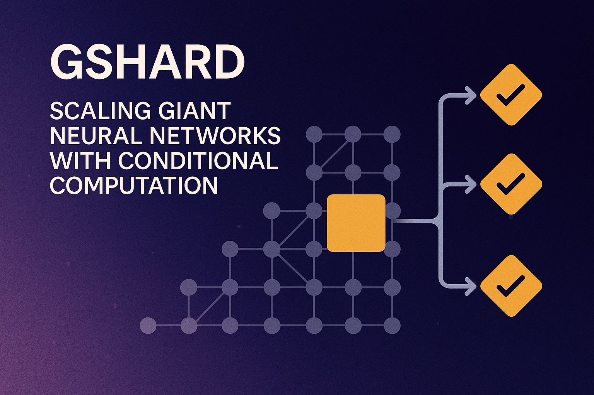

GShard: Scaling Giant Neural Networks with Conditional Computation

Introduction
GShard represents a pivotal advancement in neural network scaling, introduced by Google Research in 2020. This innovative approach addresses one of the most pressing challenges in deep learning: how to scale neural networks to unprecedented sizes while maintaining computational efficiency. By leveraging sparsely-gated mixture-of-experts (MoE) and sophisticated parallelization strategies, GShard enables the training of models with trillions of parameters using conditional computation.
The significance of GShard extends beyond mere parameter scaling. It fundamentally changes how we think about model capacity, computational efficiency, and distributed training. Rather than activating all parameters for every input, GShard selectively activates only a subset of experts, allowing for massive models that remain computationally tractable during inference and training.
Background and Motivation
The Scaling Challenge
Traditional neural network scaling follows a straightforward principle: more parameters generally lead to better performance. However, this approach faces significant limitations as model sizes grow exponentially. Dense models require all parameters to be activated for every input, creating computational bottlenecks that become increasingly prohibitive as models scale to hundreds of billions or trillions of parameters.
The computational cost of training and inference scales linearly with model size in dense architectures. For a transformer model with N parameters, each forward pass requires O(N) operations, regardless of the input complexity. This relationship creates unsustainable resource requirements as models grow larger.
Conditional Computation as a Solution
Conditional computation offers an elegant solution to this scaling challenge. Instead of activating all parameters for every input, conditional computation selectively activates only relevant portions of the network. This approach allows for models with massive parameter counts while maintaining reasonable computational costs.
The mixture-of-experts paradigm serves as the foundation for GShard’s conditional computation approach. By decomposing the model into specialized expert networks and learning to route inputs to appropriate experts, GShard achieves sub-linear scaling of computational cost with respect to model size.
GShard Architecture
Core Components
GShard’s architecture centers around several key innovations that work together to enable efficient scaling:
Sparsely-Gated Mixture-of-Experts (MoE): The fundamental building block of GShard replaces dense feed-forward layers in transformer architectures with MoE layers. Each MoE layer consists of multiple expert networks and a gating network that determines which experts to activate for each input.
Expert Networks: Individual expert networks are typically simple feed-forward networks, similar to the feed-forward layers in standard transformers. The key difference lies in their selective activation rather than their architecture. Each expert specializes in processing certain types of inputs, though this specialization emerges naturally during training rather than being explicitly programmed.
Gating Network: The gating network serves as the routing mechanism, determining which experts should process each input token. This network learns to make routing decisions based on the input representation, typically selecting only a small subset of available experts for each token.
Mixture-of-Experts Implementation
The MoE layer in GShard operates through a sophisticated gating mechanism that balances computational efficiency with model expressiveness. For each input token, the gating network computes a probability distribution over all available experts. Rather than using all experts, GShard selects only the top-k experts (typically k=2) for each token, significantly reducing computational requirements.
The gating function can be expressed mathematically as:
\[G(x) = \text{Softmax}(x \cdot W_g)\]
Where \(x\) represents the input token embedding and \(W_g\) represents the learned gating weights. The top-k selection mechanism ensures that only the most relevant experts are activated, while the softmax normalization maintains proper probability distributions.
One critical challenge in MoE architectures is ensuring balanced load distribution across experts. Without proper load balancing, some experts may receive disproportionately more training examples, leading to underutilization of model capacity. GShard addresses this through auxiliary loss functions that encourage balanced expert utilization.
Expert Capacity: To prevent memory overflow and ensure predictable computational costs, GShard implements expert capacity limits. Each expert can process a maximum number of tokens per batch, with overflow tokens either dropped or routed to alternative experts.
Parallelization Strategy
GShard’s parallelization approach represents a significant departure from traditional data parallelism. The system employs a hybrid strategy that combines expert parallelism with data parallelism to efficiently distribute computation across multiple devices.
Expert Parallelism: Different experts are placed on different devices, allowing for parallel processing of different expert computations. This approach scales naturally with the number of experts and available devices.
Data Parallelism: Within each expert, traditional data parallelism is employed to process multiple examples simultaneously. This hybrid approach maximizes hardware utilization while maintaining efficient communication patterns.
Communication Optimization: The routing of tokens to experts requires careful communication optimization. GShard implements efficient all-to-all communication patterns that minimize the overhead of token routing across devices.
Training Methodology
Distributed Training Challenges
Training GShard models presents unique challenges compared to traditional dense models. The sparse activation patterns create irregular communication requirements, and the load balancing constraints require careful optimization to prevent training instabilities.
Gradient Synchronization: Unlike dense models where gradients can be synchronized using standard all-reduce operations, GShard requires more sophisticated gradient synchronization strategies. Only the experts that were activated during the forward pass need gradient updates, creating sparse gradient patterns that require efficient handling.
Load Balancing During Training: Maintaining balanced expert utilization during training is crucial for model performance. GShard employs auxiliary loss functions that penalize imbalanced expert usage, encouraging the gating network to distribute load evenly across all experts.
Stability Considerations: The discrete routing decisions in MoE architectures can create training instabilities. GShard addresses these challenges through careful initialization strategies, gradient clipping, and regularization techniques that promote stable training dynamics.
Optimization Techniques
GShard incorporates several optimization techniques specifically designed for MoE architectures:
Auxiliary Loss Functions: These loss functions encourage balanced expert utilization and prevent the collapse of expert diversity. The auxiliary loss is typically added to the main task loss with a small weighting factor.
Expert Dropout: During training, GShard sometimes randomly drops entire experts to prevent over-reliance on specific experts and improve model robustness. This technique is analogous to traditional dropout but operates at the expert level.
Capacity Factor Tuning: The capacity factor determines how many tokens each expert can process. Tuning this parameter involves balancing computational efficiency with model expressiveness, as higher capacity factors allow more flexible routing but increase computational costs.
Performance Analysis
Computational Efficiency
GShard’s primary advantage lies in its computational efficiency compared to dense models of equivalent parameter count. By activating only a subset of experts for each input, GShard achieves sub-linear scaling of computational cost with respect to model size.
FLOPs Analysis: For a GShard model with E experts and top-k routing, the computational cost per token is approximately k/E times that of a dense model with equivalent total parameters. This represents a significant efficiency gain, especially as E increases.
Memory Efficiency: While GShard models have large parameter counts, the memory requirements during inference are determined by the number of activated experts rather than the total parameter count. This allows for efficient deployment of very large models.
Scaling Behavior: Empirical results demonstrate that GShard models can achieve better performance than dense models while using less computational resources. This scaling behavior enables the training of models that would be computationally prohibitive in dense architectures.
Quality and Capability
GShard has demonstrated impressive performance across various natural language processing tasks, particularly in machine translation and language modeling. The model’s ability to scale to trillions of parameters while maintaining computational efficiency has enabled breakthrough results in several domains.
- Translation Quality: GShard models have achieved state-of-the-art results on numerous machine translation benchmarks
- Language Modeling: Improved perplexity scores compared to dense models with equivalent computational budgets
- Generalization: Better generalization through expert specialization
Translation Quality: GShard models have achieved state-of-the-art results on numerous machine translation benchmarks, demonstrating that the MoE approach can effectively scale model capacity without sacrificing translation quality.
Language Modeling: In language modeling tasks, GShard models have shown improved perplexity scores compared to dense models with equivalent computational budgets, indicating more efficient use of model capacity.
Generalization: The sparse activation patterns in GShard models appear to promote better generalization, as different experts can specialize in different aspects of the input distribution.
Implementation Details
Technical Architecture
GShard’s implementation requires careful consideration of several technical aspects:
Framework Integration: GShard builds upon the Mesh-TensorFlow framework, which provides the necessary infrastructure for efficient distributed training of MoE models. The framework handles the complex communication patterns required for expert routing and gradient synchronization.
Device Placement: The placement of experts across devices requires careful planning to minimize communication overhead while maximizing computational efficiency. GShard employs sophisticated placement strategies that consider both computational load and communication patterns.
Memory Management: Managing memory efficiently across experts requires careful attention to buffer sizes, expert capacities, and gradient accumulation strategies. GShard implements dynamic memory management techniques that adapt to varying load distributions.
Hyperparameter Considerations
Training GShard models requires careful tuning of several hyperparameters specific to MoE architectures:
| Parameter | Typical Range | Description |
|---|---|---|
| Number of Experts | 8-2048 | Affects model capacity and computational efficiency |
| Capacity Factor | 1.0-2.0 | Determines tokens per expert |
| Auxiliary Loss Weight | 0.01-0.1 | Balances task performance and expert utilization |
Number of Experts: The number of experts represents a fundamental design choice that affects both model capacity and computational efficiency. More experts provide greater capacity but require more sophisticated load balancing.
Capacity Factor: This parameter determines how many tokens each expert can process and directly impacts both computational cost and model expressiveness. Typical values range from 1.0 to 2.0, with higher values allowing more flexible routing.
Auxiliary Loss Weight: The weighting of auxiliary loss functions affects the balance between task performance and expert utilization. This parameter requires careful tuning to achieve optimal results.
Applications and Use Cases
Machine Translation
GShard has demonstrated particular success in machine translation applications, where the model’s ability to scale to massive parameter counts has enabled breakthrough performance on challenging translation tasks.
Multilingual Translation: GShard’s expert architecture naturally lends itself to multilingual translation, where different experts can specialize in different language pairs or linguistic phenomena. This specialization enables more efficient processing of diverse linguistic inputs.
Low-Resource Languages: The increased model capacity provided by GShard has proven particularly beneficial for low-resource language translation, where the additional parameters can compensate for limited training data.
Domain Adaptation: Different experts can specialize in different domains, allowing GShard models to handle diverse translation contexts more effectively than dense models.
Language Modeling
GShard has also shown impressive results in language modeling tasks, where the model’s ability to scale efficiently has enabled training of extremely large language models.
Text Generation: The sparse activation patterns in GShard models appear to promote more diverse and coherent text generation, as different experts can specialize in different aspects of language generation.
Few-Shot Learning: The increased model capacity provided by GShard has improved few-shot learning performance, enabling better adaptation to new tasks with minimal examples.
Reasoning Tasks: GShard models have demonstrated improved performance on reasoning tasks that require complex logical operations, suggesting that the expert specialization enables more sophisticated reasoning capabilities.
Comparison with Other Approaches
Dense Models
Compared to traditional dense models, GShard offers several key advantages:
- Computational Efficiency: Better performance per FLOP than dense models
- Scalability: Sub-linear scaling of computational cost with model size
- Specialization: Natural expert specialization improves performance on diverse tasks
- Simplicity: Dense models are conceptually simpler and easier to implement
- Hardware Optimization: Existing optimizations are designed for dense computations
- Predictable Performance: Dense models have more predictable requirements
Other Sparse Approaches
GShard represents one approach to sparse neural networks, but several alternative methods exist:
Magnitude-Based Pruning: Traditional pruning approaches remove weights based on magnitude, but these methods typically don’t achieve the same level of sparsity as GShard while maintaining performance.
Structured Sparsity: Other approaches enforce structured sparsity patterns that are more hardware-friendly but may be less flexible than GShard’s learned sparsity.
Dynamic Sparsity: Some approaches learn to dynamically adjust sparsity patterns during training, offering different trade-offs between flexibility and efficiency.
Limitations and Challenges
Technical Limitations
Despite its advantages, GShard faces several technical limitations:
- Communication Overhead: All-to-all communication can become a bottleneck
- Load Balancing Complexity: Requires sophisticated auxiliary loss functions
- Hardware Utilization: Irregular computation patterns may lead to suboptimal hardware use
- Debugging Complexity: Sparse activation patterns make analysis challenging
Scaling Challenges
As GShard models scale to larger sizes, several challenges emerge:
Expert Utilization: Ensuring efficient utilization of all experts becomes increasingly difficult as the number of experts grows.
Communication Scaling: The communication requirements for expert routing may not scale favorably with very large numbers of experts.
Memory Constraints: While GShard is more memory-efficient than dense models, very large models still face memory limitations, especially during training.
Future Directions
Architectural Innovations
Several promising directions for future development include:
Hierarchical Experts: Organizing experts in hierarchical structures could improve routing efficiency and enable more sophisticated specialization patterns.
Dynamic Expert Creation: Allowing the model to dynamically create new experts during training could improve adaptability to new tasks and domains.
Cross-Layer Expert Sharing: Sharing experts across different layers could reduce parameter counts while maintaining model expressiveness.
Optimization Improvements
Future work could focus on improving the optimization of GShard models:
Better Load Balancing: Developing more sophisticated load balancing techniques could improve expert utilization and model performance.
Adaptive Routing: Learning to adaptively adjust routing strategies based on input characteristics could improve efficiency.
Hardware-Aware Design: Designing MoE architectures that are more compatible with existing hardware could improve practical deployment.
Applications and Domains
GShard’s approach could be extended to new domains and applications:
Computer Vision: Adapting MoE architectures for computer vision tasks could enable more efficient processing of visual data.
Multimodal Learning: Combining GShard with multimodal architectures could enable more efficient processing of diverse input types.
Reinforcement Learning: Applying MoE principles to reinforcement learning could enable more efficient learning in complex environments.
Conclusion
GShard represents a significant breakthrough in neural network scaling, demonstrating that it’s possible to train models with trillions of parameters while maintaining computational efficiency. The combination of sparsely-gated mixture-of-experts with sophisticated parallelization strategies has opened new possibilities for model scaling that were previously computationally prohibitive.
The success of GShard has fundamental implications for the future of deep learning. It suggests that the path to more capable AI systems may lie not just in scaling model size, but in developing more efficient architectures that can leverage massive parameter counts through conditional computation.
While GShard faces certain limitations and challenges, its core innovations have established a new paradigm for neural network architecture design. The principles underlying GShard—sparse activation, expert specialization, and efficient parallelization—are likely to influence future developments in large-scale machine learning.
As the field continues to evolve, GShard’s contributions to our understanding of scalable neural architectures will undoubtedly continue to shape the development of increasingly capable and efficient AI systems. The model’s demonstration that trillion-parameter models can be both practical and effective has fundamentally changed our perspective on what’s possible in neural network scaling.
The ongoing research building upon GShard’s foundations promises to unlock even greater capabilities in artificial intelligence, potentially leading to systems that can process and understand information at unprecedented scales while remaining computationally efficient. This balance between scale and efficiency represents a crucial step toward more practical and deployable AI systems that can benefit a broader range of applications and users.